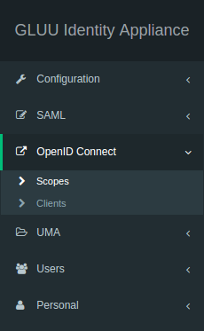

Attribute Management#
SAML Attributes#
LDAP attributes, SAML attributes, OpenID Connect user claims--whatever you call them--many organizations have business-specific information about people that needs to be shared with applications. For simplicity, this article will refer to them as "attributes." Existing standard schemas like the LDAP inetOrgPerson standard, or the OpenID Connect user claims define attributes like first name, last name and email address. Where possible, we recommend you use standard attributes that are already defined in the Gluu Server. But what if there is an attribute that is just not in any standard schema? This article will explain what you need to do to configure the Gluu Server to support your new attributes, and give you some advice along the way with regard to best practices. We will use fictional Company Acme Inc., which has requirements for "acmeCustNumber" and "acmeStateLicenseNumber".
oxTrust Attribute Management#
Additional attributes can be added from the Gluu Server GUI, oxTrust, by clicking the Add Attribute button. Then, the following screen will appear:
-
Name: This field defines the name of the custom attribute which must be unique in the Gluu Server LDAP tree.
-
SAML1 URI: This field contains the SAML1 uri for the custom attribute.
-
SAML2 URI: This field contains the SAML2 uri for the custom attribute.
-
Display Name: This display name can be anything that is human readable.
-
Type: The attribute type should be selected from the drop-down menu. There are four attribute types supported by Gluu:
- Text
- Numeric
- Photo
- Date
-
Edit Type: This field controls which type of an user is allowed to edit corresponding attribute at his/her "Profile" page of the web UI (when feature "User can edit own profile" is enabled).
-
View Type: This field controls which type of an user is allowed to view corresponding attribute at his/her "Profile" page of the web UI.
-
Privacy Level: Please select the desired privacy level from the drop-down menu. The privacy level has a specific range of 1 to 5.
-
Multivalued: Please select multivalue in this field if the attribute contains more than one value.
-
SCIM Attributes: If the attribute is a part of SCIM architecture select true.
-
Description: This contains a few words to describe the attribute.
-
Status: The status, when selected active, will release and publish the attribute in IdP.
Where are these attributes stored? During installation, the Gluu Server creates
a default objectclass specific for your organization. If you view
/opt/opendj/config/schema/100-user.ldif, you'll see an objectclass called
something like ox-43A94B45403D3B0A00010D87EAF2 (where this number is your
organization identifier.) Any objects you add through the UI will be added to this
objectclass. In the JSON configuration for oxTrust, you'll see two properties:
personObjectClassTypes and personCustomObjectClass where this objectclass is
referenced. Also, you'll see the display name for this objectclass referenced in
the personObjectClassDisplayNames property (default value is "custom").
OpenID Scopes#

The SAML counterpart to scopes is attributes which is released to service providers, or in this case Relying Party. OpenID Connect uses OAuth2 scopes to "group" attributes. For example, we could have a scope called "address" that includes the street, city, state, and country user claims.
Add Scope#
The Gluu Server administrator can easily add more scopes in the GUI.

Click Add Scope and you will be presented with the following screen:

The following fields are available for input.
- Display Name
- Description
- Scope Type
- Default Scope
- Claims
Default Scope: When a client uses dynamic
client registration, the OpenID Connect specification says that the
openid scope should always be released, which contains an identifier
for that person, normally the username. If you want to release another
scope automatically, set the Default Scope to true for that scope. You
can always explicitly release a scope to a certain client later on, but
this will require some manual intervention by the domain administrator.
Claims: The administrator can add claims in the scope by clicking on Add Claim button. The following screen shall appear on clicking the button.

Custom NameID#
Gluu Server comes with the transientID attribute which is the default NameID.
If there are other NameID requirements, it is possible to create them as well.
The custom attribute must be created in oxTrust first before defining it as the NameID.
Please see the oxTrust custom attribute guide to create the custom attribute in oxTrust.
Defining NameID#
The template file for NameID definitions are located in the attribute-resolver.xml.vm file under /opt/tomcat/conf/shibboleth2/.
The example below adds testcustomattribute as NameID based on UID attribute. The following are put into the attribute-resolver.xml.vm file.
- Add declaration for the new attribute
if( ! ($attribute.name.equals('transientId') or $attribute.name.equals('testcustomattribute') ) )
- Add definition for the new attribute
<resolver:AttributeDefinition id="testcustomattribute" xsi:type="Simple"
xmlns="urn:mace:shibboleth:2.0:resolver:ad"
sourceAttributeID="uid">
<resolver:Dependency ref="siteLDAP"/>
<resolver:AttributeEncoder xsi:type="SAML2StringNameID"
xmlns="urn:mace:shibboleth:2.0:attribute:encoder"
nameFormat="urn:oasis:names:tc:SAML:2.0:nameid-format:persistent" />
</resolver:AttributeDefinition>
- Restart tomcat service
Manual Schema Management#
Let's say you have a lot of attributes to register. Or you want a more repeatable process for adding schema to the Gluu Server. This next section will document a slightly more geeky way to do automate the process.
First of all, you should create a custom schema file, which you will copy
to /opt/opendj/config/schema each time you configure a new Gluu Server.
Use your organization name, for example something like 102-acme.ldif.
For more information about creating custom schema in OpenDJ, see the
[ForgeRock OpenDJ Admin Guide]
(https://backstage.forgerock.com/#!/docs/opendj/2.6/admin-guide/chap-schema).
You should consider prefixing the name of your attributes and objectclasses
with your organization. For example, instead of using spamId use acmeSpamId.
Restart your LDAP server to make sure the schema is correct. If it's not, the
OpenDJ server will not start.
Now you have the objectclass and attributes in OpenDJ, but the Gluu Server
still does not know about them. You're going to have to "register" these
attributes. Each attribute that you want to make available must have a
corresponding LDAP entry under ou=attributes,o=<org-inum>,o=gluu. If
you browse your LDAP server after performing a Gluu Server base installation,
you will see that many commonly used attributes are already there. When an
LDAP entry exists for your attribute, it is considered to be "registered".
Note in this example, we are using @!1111 as the organization id, which will
be much longer in a real installation.
There are two ways you can register an attribute. If you are an LDAP geek, you can just create an LDIF file with the correct information, and load it in the LDAP server that is storing your configuration. If you want to quickly spool up new Gluu Servers, this is probably the quickest way to handle it.
dn: inum=@!1111!0005!2B29,ou=attributes,o=@!1111,o=gluu
objectClass: top
objectClass: gluuAttribute
inum: @!1111!0005!2B29
description: How a person would want their name to be presented in writing.
displayName: Display Name
urn: urn:mace:dir:attribute-def:displayName
gluuAttributeName: displayName
gluuAttributeOrigin: gluuPerson
gluuAttributeType: string
gluuAttributeEditType: user
gluuAttributeEditType: admin
gluuAttributeViewType: user
gluuAttributeViewType: admin
gluuStatus: active
A few things to note:
- For the
inum, after0005!use a unique identifier--normally a four digit hex number. - If you are using SAML, you will need to make sure that each attribute has a unique
urn. If you don't likeurnformat, you can use a dns style name here. It supposed to be globally unique. - Make sure
gluuStatusis active - Set the appropriate description and displayName if possible.
Once you have this ldif file, you should make sure you use ldapmodify to load it after the during
your Gluu Server installation process.
If you also want to automate loading your custom OpenID scopes, just remember that these scopes reference the DN of the attributes. For example:
dn: inum=@!1111!0009!341A,ou=scopes,o=@!1111,o=gluu
objectClass: oxAuthCustomScope
objectClass: top
defaultScope: false
description: myScope
displayName: myScope
inum: @!43A9.4B45.403D.3B0A!0001!0D87.EAF2!0009!341A
oxAuthClaim: inum=@!1111!0005!2B29,ou=attributes,o=@!1111,o=gluu
oxAuthClaim: inum=@!1111!0005!29DA,ou=attributes,o=@!1111,o=gluu
So you may want to also create an ldif file for each scope, and also load this at installation time.